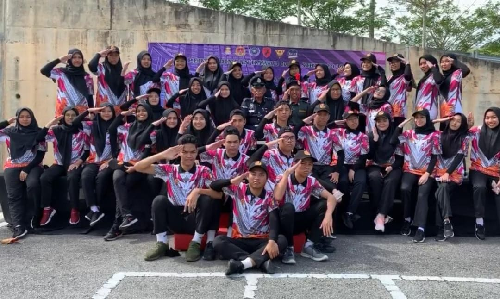
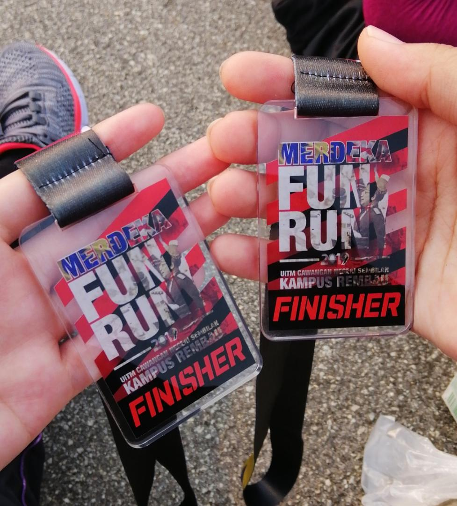
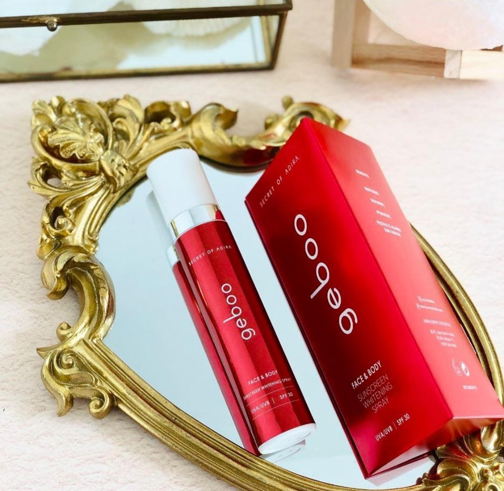

Experience
|

PERKADDuring my study in Diploma Information Management at Universiti Teknologi MARA (UiTM), I experience a lot of interesting things. I enjoy every moment of my study. The first unforgettable moment is I joining PERKAD. PERKAD is an event for student semester one. It is to build physical stronger and to build teamwork among students. It very memorable time because we managed to do a good performance. It might be tiring but everyone was happy and enjoying the first semester. |

MERDEKA FUN RUNThe second experience I want to share here is I joined Merdeka Fun Run. Merdeka Fun Run is a special event for Independent Days is on 31st August. I joined Merdeka Run because my friends asked me to join with them. It was a tiring day on that day, but I am having fun as a finisher for Merdeka Run. I hope I can join Merdeka Run every year. |

ENTREPRENEURThe last experience I gained during my study is I become an entrepreneur. It was unimaginable because I did not know the course Diploma Information Management is needed to do assignment regarding entrepreneurship. At first, I experience the hardness of becoming an entrepreneur in terms of looking for the customer. However, after I received the first customer, I felt happy and satisfied. In one week, I was able to finish the work, and I was glad all my product was out of sale earlier than I expected. I hope I can continue to become an entrepreneur someday. |